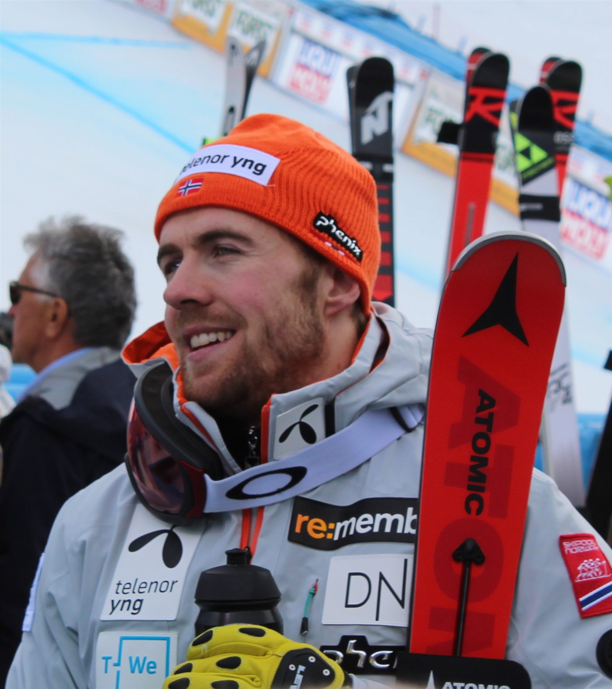
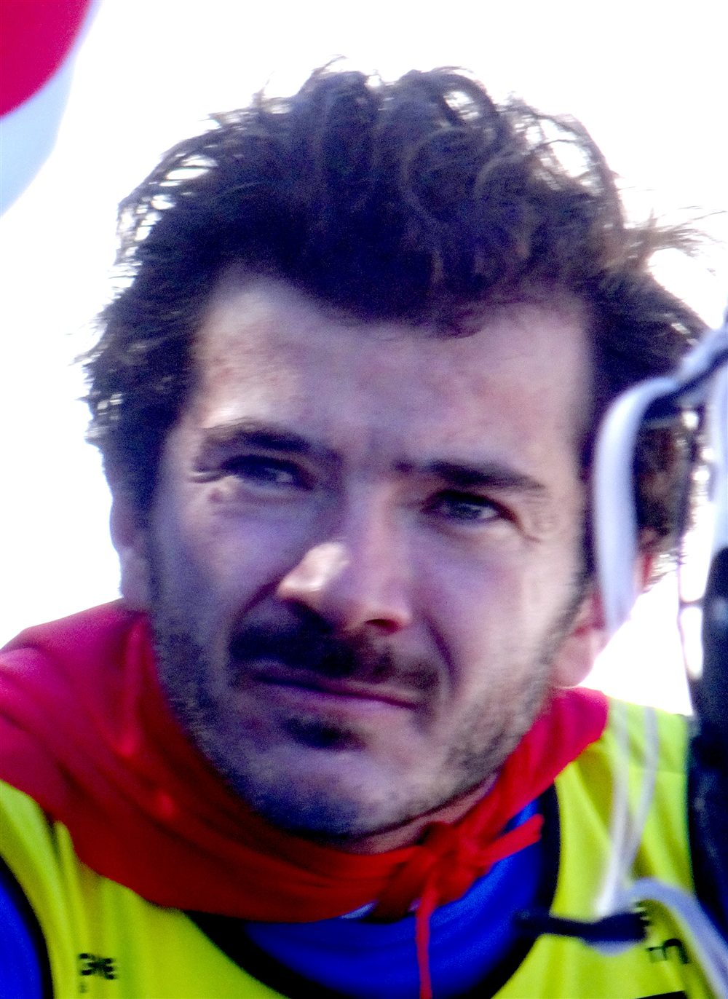
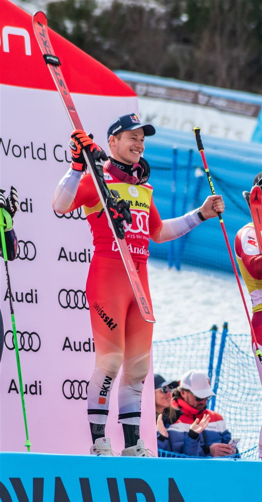
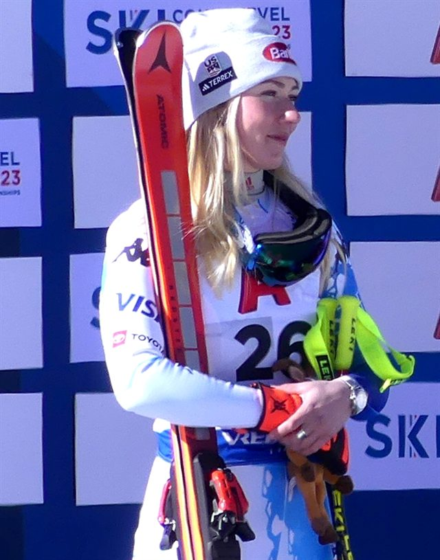

La descente
La discipline reine : une seule manche, la plus longue et la plus rapide, jusqu'à 130 km/h.

130 km/h
Vitesse en descente
1000 m
Dénivelé du Stelvio
5
Disciplines
Le ski alpin consiste à dévaler une piste chronométrée en franchissant une série de portes. Il se décline en deux familles : la vitesse (descente, super-G), où l'on frôle les 130 km/h, et la technique (slalom géant, slalom), faite de virages serrés et de réflexes.
À Milano Cortina 2026, les hommes s'élancent sur la mythique Stelvio de Bormio, l'une des descentes les plus redoutées du circuit, tandis que les femmes dévalent l'Olympia delle Tofane à Cortina.
Le Français Cyprien Sarrazin, vainqueur à Bormio en 2024, fait partie des hommes à suivre face à l'ogre suisse Marco Odermatt.

La discipline reine : une seule manche, la plus longue et la plus rapide, jusqu'à 130 km/h.
Un compromis vitesse/technique en une manche, sans reconnaissance d'entraînement.
Deux manches, virages amples : le cumul des deux temps désigne le vainqueur.
Le plus technique : des portes très rapprochées, deux manches, des centièmes décisifs.
Une manche de vitesse + une manche de slalom : l'épreuve des skieurs les plus complets.
Tout se joue au centième. Manquer une porte = disqualification immédiate.
Lieux
Stelvio, Bormio (hommes) · Olympia delle Tofane, Cortina (femmes)
Capacité
≈ 7 000 places en aire d'arrivée
Accès
Navettes JO depuis Bormio centre et Cortina d'Ampezzo. Parkings relais obligatoires.
Billet
À partir de 50 € (slalom) · 150 € (descente)
Température
Haute montagne — prévoir -8 °C, jusqu'à 2 000 m d'altitude

 Suisse
Suisse
 États-Unis
États-Unis France
France Italie Italie
Italie Italie